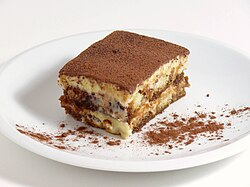

Description
Tiramisu is an Italian dessert made with coffee-soaked ladyfingers layered with creamy mascarpone filling. Invented in the 1960s, it has become a popular dessert worldwide. The name "tiramisu" means "pick me up" in Italian, referring to the energizing effects of the coffee and cocoa powder. It is typically served chilled and often garnished with cocoa powder or chocolate shavings.

Ingredients
- 2 cups of plain coffee
- 1/4 cup of spiced rum (optional)
- 16 ounces mascarpone cheese
- 1 cup heavy cream
- 1/4 cup sugar
- 1 package of ladyfingers
- Cocoa powder for dusting
Instructions
- Make the coffee and let it cool.
- Whip the cream with sugar until stiff peaks form.
- Mix the mascarpone with the rum.
- Fold the whipped cream into the mascarpone mixture.
- Quickly dip ladyfingers in the coffee mixture and layer them in a dish.
- Spread half the mascarpone mixture over the first layer.
- Add another layer of dipped ladyfingers and the rest of the mascarpone mixture.
- Top with cocoa powder and chill before serving.